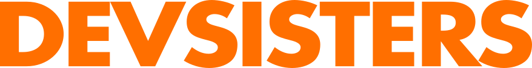

데브시스터즈 Devsisters
데브시스터즈(Devsisters)는 쿠키런(Cookie Run)으로 유명한 한국의 게임 기업으로, 2007년 설립됐다.
최종 업데이트

데브시스터즈는 어떤 브랜드인가
데브시스터즈는 2007년 익스트라스탠다드로 출발해 2010년 현재 사명으로 바꾼 대한민국 모바일 게임 기업이다. 2013년 카카오 연동 러닝 게임으로 국민 게임 반열에 올랐고, 2014년 코스닥 상장으로 자본 기반을 다졌다.
다수 게임을 펼치기보다 쿠키런이라는 단일 캐릭터 IP에 집중하는 전략을 고수하며, 2024년 연결 매출 2362억원, 임직원 약 700명 규모로 성장했다.
데브시스터즈는 어떻게 봐야 할까
국내 중견 게임사 가운데 데브시스터즈의 특이점은 자체 캐릭터 IP 하나에 회사 운명을 거는 고위험·고수익 구조다. 여러 작품을 퍼블리싱해 위험을 분산하는 넷마블·카카오게임즈와 다르고, 같은 단일 IP 의존형인 크래프톤의 배틀그라운드와 비교해도, 처음부터 호불호가 적은 무국적 쿠키 캐릭터를 택해 글로벌을 겨냥한 점이 차별적이다.
최근 변화의 함의는 분명하다. 단일 흥행작에 기댄 매출 변동성을 줄이려 게임을 넘어 실물 카드게임·캐릭터 상품·팝업까지 멀티 유니버스로 확장 중이며, 2025년 해외 IP 활용 매출이 두 배 넘게 뛴 것이 그 신호다.
한국 게임산업이 모바일 성장 둔화와 수출 감소 국면에 들어선 가운데, 이미 검증된 글로벌 팬덤 IP를 콘텐츠 사업으로 다각화하는 이 행보는 K-게임의 새로운 생존 공식을 보여준다.
데브시스터즈는 어떻게 시작되고 성장했나
2000년대 후반 한국 모바일 시장은 스마트폰 보급과 함께 캐주얼 게임의 가능성이 막 열리던 시기였다. 창업자 이지훈·김종흔은 2007년 익스트라스탠다드를 세워 초기 모바일 콘텐츠를 실험했고, 2010년 사명을 데브시스터즈로 바꾸며 캐릭터 중심 게임사로 방향을 잡았다.
첫 전환점은 2013년 카카오 플랫폼과 손잡은 러닝 게임으로, 짧은 기간에 대규모 이용자를 확보하며 회사 이름을 알렸다. 두 번째 전환점은 2014년 코스닥 상장으로, 다양화 대신 단일 IP 집중 전략을 공개적으로 천명한 분기점이었다.
이후 2016년 글로벌 러닝 후속작, 2021년 수집형 RPG로 라인업을 넓혔고, 2024년 협동 액션 신작이 세계 모바일 RPG 다운로드 1위에 오르며 IP의 외연을 다시 키웠다.
데브시스터즈의 브랜드 아이덴티티는 무엇인가
브랜드의 핵심 가치는 '세상을 즐겁게'라는 슬로건에 압축된다. 진저브레드 맨 설화에서 출발한 쿠키 캐릭터들은 둥근 윤곽, 밝고 화사한 색채, 표정이 풍부한 디자인으로 통일감을 이루며, 500여 종에 이르는 캐릭터가 하나의 세계관으로 묶인다.
주 타깃은 국경과 연령을 넘나드는 폭넓은 캐주얼·수집 이용자층으로, 호불호가 적은 음식 모티프를 의도적으로 택해 문화 장벽을 낮췄다. 브랜드 보이스는 귀엽고 따뜻하며 유쾌한 톤을 일관되게 유지해, 게임과 굿즈, 오프라인 행사 어디서나 같은 감성을 전한다.
데브시스터즈의 대표 제품과 서비스는 무엇인가
대표 라인업은 러닝 액션 '쿠키런: 오븐브레이크', 수집형 RPG '쿠키런: 킹덤', 협동 액션 '쿠키런: 모험의 탑'으로 이어지며, 퍼즐 '마녀의 성', 실시간 배틀 '오븐스매시' 등으로 장르를 넓혔다. 게임 외에는 실물 트레이딩 카드게임 '브레이버스'와 캐릭터 상품, 팝업 스토어가 핵심 채널이다.
유통은 모바일 앱마켓을 축으로 하되, 북미·동남아 등 해외 오프라인 채널을 함께 키우고 있다.
데브시스터즈는 지금 어떤 상태인가
본사는 서울에 있으며, 해외 오피스 4곳과 개발 스튜디오 3곳, 투자 전문 자회사 1곳을 운영한다. 2014년 코스닥 상장사로, 2024년 3월 조길현 대표 체제로 전환했고 이지훈·김종흔은 이사회 공동의장을 맡아 무보수 경영을 이어가는 것으로 알려졌다.
2024년 연결 매출은 2362억원, 영업이익 272억원이며 전년 대비 매출이 46.6% 늘었다. 2025년은 매출이 25.1% 증가했으나 일회성 비용 등으로 영업이익은 큰 폭 감소했다.
임직원은 약 700명 규모다. 세부 지분 구조 등 추가 수치는 미공개.
데브시스터즈 로고는 어떻게 변해왔나
자주 묻는 질문
데브시스터즈는 어느 나라 브랜드인가요?
데브시스터즈는 한국의 미디어·엔터테인먼트 브랜드입니다.
데브시스터즈는 언제 설립되었나요?
데브시스터즈는 2007년 설립되었습니다.
데브시스터즈의 브랜드 아이덴티티는 무엇인가요?
브랜드의 핵심 가치는 '세상을 즐겁게'라는 슬로건에 압축된다.
데브시스터즈의 대표 제품은 무엇인가요?
대표 라인업은 러닝 액션 '쿠키런: 오븐브레이크', 수집형 RPG '쿠키런: 킹덤', 협동 액션 '쿠키런: 모험의 탑'으로 이어지며, 퍼즐 '마녀의 성', 실시간 배틀 '오븐스매시' 등으로 장르를 넓혔다.
데브시스터즈의 본사는 어디에 있나요?
본사는 서울에 있으며, 해외 오피스 4곳과 개발 스튜디오 3곳, 투자 전문 자회사 1곳을 운영한다.
데브시스터즈의 공식 웹사이트는 어디인가요?
데브시스터즈의 공식 웹사이트는 https://www.devsisters.com/ 입니다.
출처와 검증
데브시스터즈 관련 참고: 공식 웹사이트 · 위키데이터 Q20445830 · 한국어 위키백과 · 영어 위키백과. 브랜드명은 한글과 원어를 함께 표기하되 데이터에 없는 표기는 만들지 않습니다. 기원 국가·설립연도는 검수된 정의문에서 확인된 값을 우선하고, 없을 때만 공식 웹사이트 URL이 일치하는 위키데이터 개체의 값을 씁니다. 위키데이터 값은 2026-09-07 기준입니다.